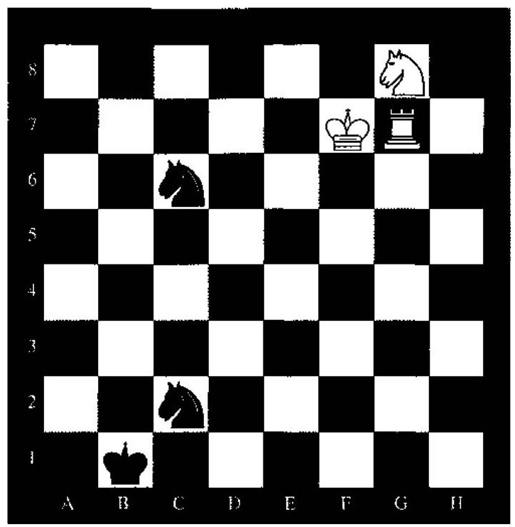
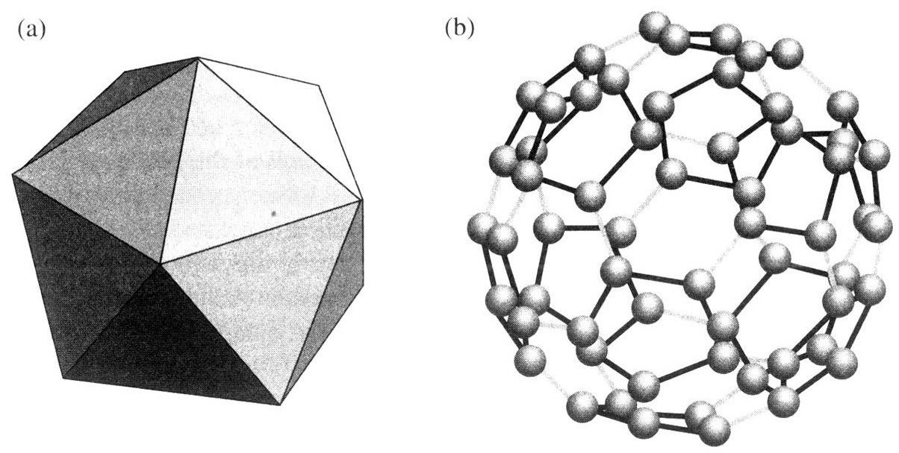
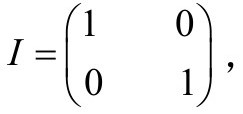

马克·施泰纳
在《皇帝新脑》（Penrose，1989）和最近的《通向实在之路》（Penrose，2005）两本著作中，彭罗斯教授倡导一种他所谓的柏拉图主义，即柏拉图的数学世界。由于彭罗斯教授将出席本次研讨会，因此我想在这里讨论他的这一观点——或更确切地说，是我基于他的这两本著作的强大影响力而认为的他的这一观点——将是适当的。
正如彭罗斯在《通向实在之路》一书中所解释的，他所追求的是数学的客观性[81]，而不是“数学对象”的存在性。关于后面这一点，正像本次研讨会的另一位发言者罗森教授所指出的那样，是指数学是否是一种“没有对象”的学科。正如伯吉斯和罗森在他们的优秀著作（Burgess and Rosen，1997）中指出的，柏拉图主义被奎因挟持了，他把它定义为“对数学对象的量化”，它不再具有它过去所具有的意义。由学者撰写的讨论这方面的书一本接一本（其中大部分由牛津大学出版社出版），例如，有本书就提出，“数学对象”是否应该突然消失，那样它将带来可观的变化。[82]
因此我认为，完全不涉及柏拉图，讨论概念而不是对象，并将笛卡尔作为彭罗斯的认识（譬如认为像曼德布罗特集这样的概念是客观的）的真正来源，这样可能会更好。毕竟，彭罗斯并不（像柏拉图那样）认为每一个概念都是客观的，这一点与笛卡尔非常一致。笛卡尔在《第一哲学沉思集》中曾这样描述他对这个问题的看法：
笛卡尔在这里说的是，你从数学里得到的要比你赋予它的多。数学思想中内在地具有一种没包含在语词定义中的“潜在信息”。[84]这种“潜在信息”是这些思想精髓的一部分，而不是由数学家放进去的。在我看来，这一点正是数学与游戏之间的真正差别。不妨看看下面这个国际象棋残局（见图10.1）。[85]
假设双方都有完美的发挥，那么白棋要准确地将死对方需要走262步。而在许多局面下，走的那些着“没有任何意义”，这里的意义是指在不实际摆出所有可能的着法谱图的情形下我们不可能解释清楚这个结论。虽然这种事情显然不是“预期的”（国际象棋里有50步判和规则，是指在终局前双方都没有走动任何一兵，也没有吃过任何一子，即判和），这里出人意料的是，国际象棋规则所包含的条款非常之少，你怎么一点收获的投资。因此，国际象棋的本质就是其着法的任意性，这肯定不是笛卡尔所说的那种“真实的和不变的本性”。
我们不妨将上述情形与彭罗斯教授喜欢列举的“神奇的”复数的例子相对照。当意大利人将复数作为方程的实数解之外的虚数解引入时，没人能预言它们在与实数的关系上会扮演什么角色。我们来看看下面这个优美的方程
eiπ+1=0
它是欧拉发现的著名公式

图10.1轮白棋走，262步将死对方
eiθ=cos（θ）+isin（θ）
的一种特殊情形。
我们注意到，当引入虚数后，将实数提升为虚指数的思想即使对于像卡尔达诺和邦贝利（Bombelli）这样的数学大家来说也是不可想象的。然而，一旦人们认真领会了这种思想，在如何处理上就很少有或者说根本没有选择。
虚数的最初提出者没有认识到的虚数的另一个属性是复数的绝对值。当我们将复数用欧几里得平面来表示时，这个问题便显现出来了。利用这个属性，数学家可以解释有关实数的事实，例如，为什么在实轴上处处有定义的实函数1/（1+x2）不等于其幂级数展开式1-x2+x4-…，其中|x|≥1（绝对值等于1的复数组成围绕原点的一个圆，实数1和虚数i都在这个圆上。对于i，这个函数没有定义，尽管它在复平面上连续，因为这里的分母是零。复分析里的标准定理能够解答余下的问题）。
有人可能会说，虚数的引入部分是出于计算上的方便。卡尔达诺甚至用虚数来计算一元三次方程的实根（见其著名公式）。但即便如此，其思想中所固有的“潜在信息”也远远超出了方便计算的范畴。总之，引入虚数的意义从《皇帝新脑》的下面这段话可见一斑（这段话就像是笛卡尔写的，都说他能预言数学的未来）：
彭罗斯（1989年版，第96～97页）[86]
笛卡尔/彭罗斯关于数学概念里“真实的和不变的本性”的思想，我在几年前的一篇文章中对此作过讨论（Steiner，2000），与数学应用于自然没有特别的关系，但它是本论文的立论所在。人们常常看到，正是这种在数学概念发现的潜在的数学信息——甚至它们的引入是出于“方便”的考虑——提供了数学在自然科学领域的最壮观的应用。这个“剩余价值”在“虚”数应用到“真实”自然方面尤为明显。正如在纯数学中的情形，这些应用最开始是出于计算上的方便考虑，但终了它们具有了一种描述上的必然性。在下文中，我将讨论一些非常有名的事实（读过彭罗斯著作的人都了解这些）。人们对这些事实是如此熟悉，以至于可能忘记了它们有多么了不起。从现在起，我们将讨论数学在自然科学中的那种所谓“不可思议的有效性”。
欧拉的发现使我们可以很方便地表示平面上的转动——即通过复平面上单位向量——而不必借助于凌乱的三角公式。两个转动的组合可以用两个单位向量的乘积给出，结果仍是一个单位向量，其辐角等于相乘的两个单位向量的辐角之和。
19世纪里有许多这类将这种方便推广到空间转动的尝试。欧拉曾证明如何用三个角（现今称为“欧拉角”）来表示空间转动，将复数概念推广到“复空间”上的三维向量似乎是合理的，但这些尝试都失败了。于是哈密顿通过与复数类比，不得不将空间维数提升到四维，以便得到一个满足乘法运算的向量空间。[87]他将这种代数的元素称为“四元数”，写成a+bi+cj+dk的形式，其中单位元素的乘法满足i2=j2=k2=ijk=-1，他曾将这个方程刻在一座桥上，以铭记他发现这些关系所带来的激动之情。与复数类比可见，单位四元数表示空间转动。乘以两个单位四元数，表示两种基本转动的组合，由此我们有（用后来的术语）一种同态。四元数乘法不满足可交换性，这一事实对于这里的目的是微妙的，因为转动本身就是不可交换的。然而，这里还有一些令人困惑的地方：在i、j、k分别表示关于x、y、z轴转动的特殊情形下，这种转动是转过180°而不是90°，否则由i、j、k所表示的连续转动不会使轴回到原初位置。（更仔细的分析见彭罗斯《通向实在之路》2005年第1版，第11章）。这意味着三个单位四元数-i、-j、-k分别表示转动540°（=180°）。一般来说，这是对的——负的单位四元数表示与四元数本身相同的转动。同态不是同构，但两个同态等于一个同构。关于固定轴的空间转动的任何连续（子）群r（θ）都可以通过单位四元数的连续路径q（θ）同态地表示出来，只不过q（θ+2π）=-q（θ），而r（θ+2π）=r（θ）。每次转动确立两个标签，或“宇称”。转动的宇称是无用的信息，或者说看起来如此。

图10.2（a）正二十面体；（b）碳-60分子（巴基球）
将模1的复数的平面转动表示扩展到空间转动的另一种方法出现在与上述方法大致相同的时期。这是一种由（普通）复数的2×2酉矩阵表示的转动。酉阵M满足MM*=I（单位矩阵），其中M*是通过转置M中的行和列，再将相应的元素用M的共轭复数来取代（即，x+iy→x-iy）所得到的矩阵。酉矩阵的行列式必须是一个绝对值等于1的复数。通过限定矩阵的行列式等于+1而得到的矩阵构成了我们现今所称的SU（2）群，即2×2矩阵的“特殊酉群”。这种方法是凯莱、拉盖尔和其他一些数学家努力的结果。但我能找到的明确给出SU（2）群与转动群之间同态的最早记录是在1884年，当时费利克斯·克莱因（Klein，1888，第34页及其后几页）做过关于正二十面体群的讲座，[88]并在两年后将同态方法用于他关于陀螺仪转动研究的计算中（见Klein，1922）。
我们可以证明，SU（2）与单位四元数同构，因此也存在二到一地从SU（2）同态到所有的转动。例如，SU（2）矩阵
对应于关于z轴的2θ转动。[89]当θ=0时，矩阵为单位矩阵

对应于零转动；当θ趋向π时，矩阵为-I，转动为满转动。两个满转动使矩阵回到I。我们再一次得到一种无端的转动标记来表示转动的正或负，用SU（2）得到在区间（360°，720°）上的转动，计算上的方便是第一时间引入SU（2）的理由。非常明显的是，这种多余的信息对于理解我们的宇宙的某些基本特性至为关键。电子的自旋对称性恰恰就是SU（2）转动对称。当电子转过360°，所得到的态相当于其量子力学描述（波函数）乘以-1。为了让电子回到其初态，就必须让它转两圈。如果数学物理学家有更好的计算器，他们可能就错过了科学史上的一个重大发现。[90]这只是人类局限性的诸多实例中的一个例子，这些局限性阻碍的远不只仅是科学的进步。[91]
电子生活在两维的复向量空间并具有SU（2）对称性这一事实甚至在宏观水平上都可以检测到。考虑碳—60分子，它具有巴基球的形状，或曰截去棱角的正二十面体，它像一个足球一样是由多个六边形和五边形组成的。巴基球似乎有正二十面体的I型对称性：绕其中心有60种不同的转动，构成巴基球不变量。[92]然而，如果我们在磁场中研究碳—60分子的顺磁性行为，这个磁场也具有正二十面体对称性，那么我们就必须“拉回”到使SU（2）的元对应于I的元。于是，巴基球的真实对称群是SU（2）的有120个元素的子群G。这里SU（2）二到一地同态到I（Chung et al.，1994，§9）。
这个故事里还有个故事。E.N.拉盖尔在1867年发表了一封给埃尔米特的“信”。在信中他定义了矩阵乘法，并讨论了它的属性（Laguerre，1867：1898）。在这个讨论中，他引入了矩阵的整数模p，模的概念属于数论的研究范畴，在任何情况下都难有物理应用。如果我们考虑一个2×2的矩阵，设p=5，并将待研究的矩阵限定为行列式为+1的可逆矩阵，那么我们恰好能得到120个矩阵构成一个群，可以证明，这个群同构于G——一个令人惊讶的事实——这意味着拉盖尔的数论思想被证明可以用于描述巴基球的电特性和磁特性。显然，在此我们得到的要比投入的多（Chung et al.，1994，§2）！
现在让我们回到电子本身的自旋问题上来，电子自旋两周后返回到初态。人们可能会认为，由于电子不具有标准的几何形状，因此可能转过3圈或其他数目的圈数后也会返回到初态。然而，如果我们用拓扑来理解时数字2就显得很“自然”。
人们经常引用这样一个例子：如果你将一条带子的一端夹在一本书里，另一端拿在手上，然后将书转动一整圈，你得到的是一条扭成麻花的带子。但是，如果你把书转动两整圈，然后让麻花状带子绕书转一圈，则纸带恢复到原状。[93]拓扑上这个过程表示如下：如果我们将转动做成一个闭环，那么这个闭环是不可以“缩”成一个“点”的（这里的“点”是指恒定的转动曲线，即不转动任何东西的曲线）。只有双环可以这么缩成点。这不是欧几里得空间下的一个直接的事实，它是通过研究SU（2）与SO（3）之间的二到一同态性质来揭示的（见Sternberg，1994，§1.6）。
费曼给出了关于这种思想的另一种“扭曲”（见Feynman和Weinberg，1987，第56～59页）。他建议用一条带子拴住两个电子，并让它们交换位置。于是带子被扭曲，拓扑上看就是我们得到了一种单一的转动，每个电子相当于贡献了一半的转动。在这种情况下，我们预期描述两个电子的波函数会变号，这是费米子的基本性质。如果这种说法是对的，它似乎好得不像是真的，那么我们用SU（2）和一点点拓扑知识便得到了著名的“自旋”与“统计”之间的联系——不用相对论，也不用场论。即使这种想法得不出结论，这种将SU（2）对称性与费米统计联系起来的证明，是SU（2）的发明者做梦也想不到的。
最显著的或许要算SU（2）和一般酉矩阵的进一步推广应用。这些应用使得酉矩阵的概念越来越远离其最初的应用——转动的表示。
我举两个例子：第一个是海森伯在1932年将SU（2）对称性应用于核物理。业已证明，中子和质子是同一种粒子（现今称为“核子”）的两种态，从数学上看，这两种粒子可以类比于电子的“自旋向上”和“自旋向下”的两个态。使中子变成质子然后再返回到中子态的“转动”（一种引起粒子的波函数变号的“转动”）不可能看成是物理空间中的转动。不过，核子的SU（2）对称性，即所谓“同位旋”，有经验的结果。这种类比的物理基础，如果存在的话，甚至在今天仍是未知的。
当我们转向高维酉矩阵后，群与转动的简单联系不再成立。例如，SU（3）（行列式为+1的3×3酉矩阵群）就不同态于群SO（n）。它与转动的联系只能通过类比于SU（2）。尽管这样，也许正因为如此，SU（3）可以描述夸克的三种状态，而核子正是由夸克构成的（因为核子具有整数电荷，而夸克具有分数电荷，这种差别阻碍了对它们的发现）。转动竟然只是更大的冰山的一角。
克莱因在他的演讲（1922，Lecture I）的开头给出了将推广SU（2）二到一同态到转动群的另一种方式。如果我们放弃酉化的要求，只考虑行列式为1的2×2复数矩阵，我们便得到了现今称为SL（2，C）的矩阵群。克莱因证明了（这条定理的陈述见第626页），在SL（2，C）和二维流形上的变换群之间存在一种两到一的同态关系，而这种群被证明同构到正常洛仑兹群L°（具有正行列式并保前向“光锥”的洛伦兹变换群），当我们研究相对论性量子理论时，就会明白这种同态本身有着重大的物理意义。
我认为，“神奇的”复数（彭罗斯语）对转动的适用性及其到SU（2）及其后的推广在数学史上非比寻常，它很好地说明了数学概念往往具有潜在信息的现象，这种信息可以用于数学的发展。更重要的是，大自然似乎利用这些数学上的可能性。
这里有三个要素：数学、自然和人的心灵。这三者中哪一个负责揭示“数学本质”的这种显著的丰富性呢？
致谢
我要感谢什洛莫·斯腾伯格（Shlomo Sternberg）的重要帮助和忠告。还要感谢什穆埃尔·埃利佐尔（Shmuel Elitzur）、希尔万·卡佩尔（Sylvain Cappell）和卡尔·普希（Carl Posy）在多年的教学过程中所给予的有价值的讨论。本项研究得到以色列科学基金会的支持，批准号251/06，我很感谢这种支持。
马库斯·杜·索托伊
得之多于予之的思想是我从事的这个领域最具吸引力的特点之一。我觉得这个比值在数学中可能比在任何其他学科中更大，这也是我为什么选择了数学而放弃了生物学的一个原因，也许还因为我的记忆很糟糕。一旦你进入这个领域，你只需要一些公理，其他的一切就会奔涌而出。生物和化学似乎总是需要你记住自然呈现的一些东西，这些东西有时似乎是很随意的。
数学家的艺术往往是挑选游戏规则，以便最大限度地放大这个比值。虽然施泰纳在游戏和数学之间做了区分，但我想他在看到以下这些事例后会同样感到满足：围棋“Go”的简单规则带来极其丰富的行棋局面；定义群的三条简单的公理可以带来大魔单群和作为物理学基础的李群。
这让我想起施泰纳的文章所提出的富于挑战性的论点：在抽象的、优美的数学世界与物质的、杂乱的物理学、化学和生物学世界之间存在非凡的协同作用。这也许有点奇怪：如果量子物理学关于世界被量化成离散的碎片的观点是正确的话，那么完美的圆形或直角三角形——数学最基本的对象——可能就没有任何物理实在性可言。我们轻松随意摆弄的无穷大在本质上很可能有限的宇宙中就没有具体的实现对象。但不管怎么说，我们心灵的这些对象到底是如何帮助我们预言混乱的宇宙的未来行为的，这颇令人惊奇。我们创建用来解三次方程的虚数难道与至关重要的描述量子世界的数是同一种数吗？
也许正像施泰纳在回应我的文章时所建议的那样，我们可以有一个拟人化的答案。我们选择我们乐于驾驭的数学。那么数学和带来最初兴奋的源头来自哪里呢？来自对物理世界的描述。埃及人要想知道金字塔的体积，他们需要知道究竟用了多少块砖石。但是要想计算其体积，那就需要发明一种方法，将砖石形状切割成无限多的小块，无限薄的片，这样他们可以重新排列这些石料，使问题变得容易些。于是积分的早期形式便由此产生了。
在实际层面上考虑切割真金字塔这种过程显然是荒谬的。但这样一种从数学世界到我们这个杂乱的真实世界的投射已经建立起来。由于数学世界是以试图描述和预言物理实在来开始其旅程的，因此我们以纯粹抽象的形式所创造的数学，以其固有的内在魅力，会经常发现，这种旅程启程之后自身便被投射到我们这个杂乱的宇宙创生问题中来了就一点也不意外了。
最后一点。有时数学能很好地说明为什么你不能从所投入的对象上得到更多，从实数扩展到复数再扩展到四元数到八元数，但数学家可以证明，这之后你得不到更多的数的种类。同样，李群E6、E7和E8具有非常优美而强大的结构，但数学可以证明为什么这种结构会到此而止，不存在E9。有时候你得到的要比你预料的少。但了解这一点有时像投入少回报多一样令人兴奋。特殊李群之所以特殊，正因为其独特的性质。不过，E8能成为构成实在结构的基本粒子模型还是令人惊异的。大自然肯定有好的鉴赏力。